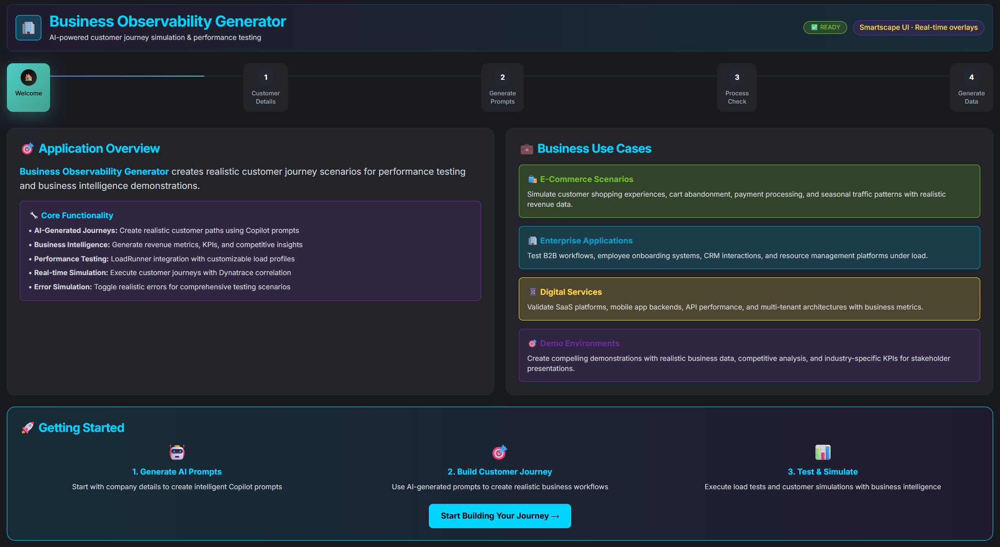

// JavaScript snippet placeholder for Creating Your Journey documentation // This file enables the --8<-- snippet inclusion functionality
Creating Your Customer Journey#
Now that you have the BizObs Generator application running, let's walk through creating your first customer journey using the intuitive web interface. This step-by-step guide follows the actual UI workflow with screenshots and detailed explanations.
🎯 Journey Creation Overview#
The BizObs Generator uses a streamlined 4-step process to create comprehensive business observability data:
graph LR
A["🏠 Welcome"] --> B["📋 Customer Details"]
B --> C["🤖 Generate Prompts"]
C --> D["✅ Process Check"]
D --> E["📊 Data Generation"]
Each step builds upon the previous, creating rich business context that flows through to Dynatrace for complete observability.
Step 1: Application Welcome Page#

The welcome page introduces the Business Observability Generator with its key capabilities:
What You See#
- Clean, Professional Interface with Dynatrace branding
- Four-Step Process Overview clearly outlined
- Getting Started Button to begin journey creation
Key Features Highlighted#
- ✅ AI-Powered Prompt Generation for business observability
- ✅ Dynamic Service Creation with clean naming conventions
- ✅ Enhanced Metadata Integration including industry-type and journey-detail
- ✅ Dynatrace Integration with comprehensive DT_TAGS
Action Required#
Click "Start Building Your Journey" to proceed to customer details entry.
Step 2: Customer Details Input#

This critical step captures the business context that will flow through all generated services and traces.
Form Fields Explained#
Company Information#
- Company Name: Primary identifier for service naming and metadata
- Example: "Microsoft", "Tesla", "Salesforce"
- Impact: Used in service naming (
ProductDiscoveryService-Microsoft) - Domain: Company website for business context
- Example: "www.microsoft.com", "tesla.com"
- Impact: Added to DT_TAGS as
domain=www_microsoft_com
Industry Classification#
- Industry Type: High-level industry category
- Examples: "Cloud Software", "Electric Vehicles", "Financial Services"
- Impact: Creates
industry-type=cloud_softwaretag for business segmentation
Journey Specifics#
- Journey Type: The business process being simulated
- Examples: "Product Purchase", "Trial Signup", "Account Creation"
- Impact: Provides context for AI prompt generation
- Journey Detail: Specific variation or sub-process
- Examples: "Azure Enterprise Purchase", "Model Y Configuration", "Premium Upgrade"
- Impact: Creates
journey-detail=azure_enterprise_purchasetag
Process Steps#
Define the actual steps in your customer journey: - Step Name: Clear, business-meaningful step identifier - Description: Detailed explanation of what happens in this step - Add/Remove Steps: Dynamic step management
Example Configuration#
{
"companyName": "Microsoft",
"domain": "www.microsoft.com",
"industryType": "Cloud Software",
"journeyType": "Product Purchase",
"journeyDetail": "Azure Enterprise Purchase",
"steps": [
{
"stepName": "ProductDiscovery",
"description": "Azure services discovery and evaluation"
},
{
"stepName": "PricingEvaluation",
"description": "Enterprise pricing and cost analysis"
}
]
}
Action Required#
Fill out all fields completely, then click "Generate Prompts" to proceed.
Step 3: AI-Powered Prompt Generation#

This step leverages AI to create business-focused prompts specifically tailored for observability analysis.
What Happens Here#
Business Observability AI Prompts#
The system generates two specialized prompts:
- Primary Business Analysis Prompt
- Industry-specific business observability recommendations
- Key performance indicators for your journey type
- Common pain points and optimization opportunities
-
Dynatrace-specific monitoring strategies
-
Enhanced Journey Context Prompt
- Step-by-step business impact analysis
- Technical requirements for each journey phase
- Error scenarios and resilience testing recommendations
- Customer experience optimization insights
Enhanced Metadata Integration#
The prompts incorporate your specific inputs: - Company Context: Industry best practices and benchmarks - Journey Details: Process-specific KPIs and metrics - Industry Type: Sector-specific observability patterns - Technical Considerations: Service architecture recommendations
Example Generated Content#
For a "Microsoft Azure Enterprise Purchase" journey:
**Business Observability Focus for Cloud Software Industry:**
- Track enterprise sales cycle progression through Azure service discovery
- Monitor pricing evaluation duration impact on conversion rates
- Measure customer decision-making bottlenecks in complex enterprise purchases
- Analyze technical evaluation steps and their business impact
- Correlate service performance with enterprise customer satisfaction
Action Required#
Review the generated prompts and click "Process Response & Continue" to validate the configuration.
Step 4: Process Validation & Checks#

The validation step ensures all components are properly configured before data generation begins.
System Validations Performed#
✅ Configuration Completeness#
- All required fields populated
- Journey steps properly defined
- Business context validated
- Metadata structure verified
✅ Service Naming Validation#
- Clean service names generated (no duplicate suffixes)
- Company-specific naming conventions applied
- Dynatrace service detection compatibility confirmed
✅ Metadata Structure Check#
- DT_TAGS format validation
- Industry-type and journey-detail integration confirmed
- No duplicate metadata sources detected
- Lowercase formatting compliance verified
✅ AI Prompt Validation#
- Business observability focus confirmed
- Industry-specific content generated
- Journey context properly integrated
- Dynatrace integration recommendations included
Example Validation Results#
✅ Company: Microsoft
✅ Industry Type: cloud_software
✅ Journey Detail: azure_enterprise_purchase
✅ Service Names: ProductDiscoveryService, PricingEvaluationService
✅ DT_TAGS: Comprehensive metadata structure validated
✅ AI Prompts: Business observability content generated
Action Required#
Once all validations pass, click "Continue to Generate Data" to create your customer journey.
Step 5: Data Generation & Service Creation#

The final step executes the journey simulation, creating real services and generating observability data.
Click "Run Journey Simulation" to create your customer journey.
Real-Time Generation Process#
📊 Live Progress Tracking#
- Service creation progress indicators
- Real-time status updates
- Error handling and recovery information
- Completion metrics and summaries
🚀 Dynamic Service Creation#
Services are created with enhanced metadata:
🚀 Starting child service: ProductDiscoveryService on port 8096
Company: Microsoft (domain: www.microsoft.com, industry: Cloud Software)
DT_TAGS: company=microsoft app=bizobs-journey service=productdiscoveryservice
release-stage=production owner=ace-box-demo customer-id=microsoft-demo
environment=ace-box product=dynatrace domain=www_microsoft_com
industry=cloud_software industry-type=cloud_software
journey-detail=azure_enterprise_purchase
📈 Business Observability Data#
Each service generates rich business context: - Journey Trace: Complete end-to-end journey tracking - Business Metrics: Revenue, conversion rates, customer satisfaction - Performance Data: Response times, error rates, throughput - Customer Context: Device type, location, behavior patterns
Generated Data Structure#
{
"journey": {
"journeyId": "microsoft_azure_purchase_001",
"customerId": "enterprise_customer_001",
"correlationId": "a28fcc4f-d3e0-4290-ba40-4f138f2877aa",
"companyName": "Microsoft",
"industryType": "Cloud Software",
"journeyDetail": "Azure Enterprise Purchase",
"steps": [
{
"stepName": "ProductDiscovery",
"serviceName": "ProductDiscoveryService",
"processingTime": 154,
"metadata": {
"itemsDiscovered": 85,
"touchpointsAnalyzed": 14,
"dataSourcesConnected": 3
},
"businessValue": 2500.00
}
]
}
}
🎯 What Gets Created#
Dynamic Microservices#
Each journey step creates a dedicated microservice:
- Clean Naming: ProductDiscoveryService, PricingEvaluationService
- Port Allocation: Dynamic port assignment (8080-8120 range)
- Process Management: Individual PIDs for each service
- Health Monitoring: Built-in health check endpoints
Dynatrace Integration#
Complete observability data: - Distributed Traces: W3C trace context propagation - Service Maps: Automatic service discovery and relationships - Business Events: Custom business KPIs and metrics - Enhanced Tags: Industry, journey, and company context
Business Context#
Rich metadata flowing through all systems: - Company Context: Industry-specific business patterns - Journey Context: Step-by-step business impact tracking - Customer Context: Behavioral patterns and preferences - Performance Context: Technical metrics tied to business outcomes
🚀 Journey Execution Results#
After successful generation, you'll see:
Service Summary#
📊 Journey Generation Complete!
✅ Services Created: 2
✅ Total Processing Time: 7.8 seconds
✅ Business Value Generated: $3,247.50
✅ Customer Satisfaction: 4.2/5.0
Dynatrace Data Flow#
All generated data automatically flows to Dynatrace: - Services: Appear in Services view with clean names - Traces: Complete journey traces with business context - Tags: Enhanced metadata for business analysis - Events: Business KPIs for executive dashboards
🎪 Advanced Journey Patterns#
Multi-Step Enterprise Journeys#
Create complex B2B processes:
E-Commerce Customer Journeys#
Build retail customer experiences:
SaaS Trial Conversions#
Design software evaluation flows:
✅ Verification & Next Steps#
Confirm Journey Creation#
- Check Service Health: All services running with green status
- Verify Dynatrace Data: Services appearing in Dynatrace UI
- Review Business Metrics: KPIs generated and tracked
- Test API Endpoints: Journey simulation endpoints accessible
Ready for Dynatrace Analysis#
Your journey is now generating continuous observability data perfect for:
- Executive Dashboards: Business KPI tracking
- Service Performance Analysis: Technical optimization
- Customer Experience Monitoring: Journey success rates
- Business Impact Correlation: Technical issues vs business outcomes
Journey Created Successfully!
Your customer journey is now live and generating comprehensive business observability data. Proceed to Dynatrace to visualize and analyze the insights.